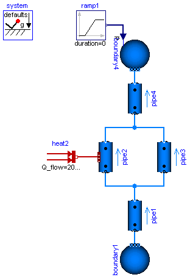

This icon indicates a package that contains executable examples.
Extends from Modelica.Icons.ExamplesPackage (Icon for packages containing runnable examples).
| Name | Description |
|---|---|
AST_BatchPlant … | Model of the experimental batch plant at Process Control Laboratory at University of Dortmund (Prof. Engell) |
BranchingDynamicPipes | Multi-way connections of pipes with dynamic momentum balance, pressure wave and flow reversal |
ControlledTankSystem … | Tank system with controller, start/stop/shut operation and diagram animation |
DrumBoiler … | Drum boiler example, see Franke, Rode, Krueger: On-line Optimization of Drum Boiler Startup, 3rd International Modelica Conference, Linkoping, 2003 |
Explanatory … | A set of examples illustrating when special attention has to be paid |
HeatExchanger … | Demo of a heat exchanger model |
HeatingSystem | Simple model of a heating system |
IncompressibleFluidNetwork | Multi-way connections of pipes and incompressible medium model |
InverseParameterization | Demonstrates the parameterization of a pump and a pipe for given nominal values |
NonCircularPipes | Comparing a circular with a non-circular pipe |
PumpingSystem | Model of a pumping system for drinking water |
Tanks … | Library demonstrating the usage of the tank model |
TraceSubstances … | Library demonstrating the usage of trace substances |
Water is pumped from a source by a pump (fitted with check valves), through a pipe whose outlet is 50 m higher than the source, into a reservoir. The users are represented by an equivalent valve, connected to the reservoir.
The water controller is a simple on-off controller, regulating on the gauge pressure measured at the base of the tower; the output of the controller is the rotational speed of the pump, which is represented by the output of a first-order system. A small but nonzero rotational speed is used to represent the standby state of the pumps, in order to avoid singularities in the flow characteristic.
Simulate for 2000 s. When the valve is opened at time t=200, the pump starts turning on and off to keep the reservoir level around 2 meters, which roughly corresponds to a gauge pressure of 200 mbar.

Extends from Modelica.Icons.Example (Icon for runnable examples).
Simple heating system with a closed flow cycle. After 2000s of simulation time the valve fully opens. A simple idealized control is embedded into the respective components, so that the heating system can be regulated with the valve: the pump controls the pressure, the burner controls the temperature.
One can investigate the temperatures and flows for different settings of system.energyDynamics
(see Assumptions tab of the system object).
system.energyDynamics==Types.Dynamics.FixedInitial the states need to find their steady values during the simulation.system.energyDynamics==Types.Dynamics.SteadyStateInitial (default setting) the simulation starts in steady-state.system.energyDynamics==Types.Dynamics.SteadyState all but one dynamic states are eliminated.
The left state tank.m is to account for the closed flow cycle. It is constant as outflow and inflow are equal
in a steady-state simulation.Note that a closed flow cycle generally causes circular equalities for the mass flow rates and leaves the pressure undefined. This is why the tank.massDynamics, i.e., the tank level determining the port pressure, is modified locally to Types.Dynamics.FixedInitial.
Also note that the tank is thermally isolated against its ambient. This way the temperature of the tank is also well defined for zero flow rate in the heating system, e.g., for valveOpening.offset=0 at the beginning of a simulation. The pipe however is assumed to be perfectly isolated. If steady-state values shall be obtained with the valve fully closed, then a thermal coupling between the pipe and its ambient should be defined as well.
Moreover it is worth noting that the idealized direct connection between the heater and the pipe, resulting in equal port pressures, is treated as high-index DAE, as opposed to a nonlinear equation system for connected pressure loss correlations. A pressure loss correlation could be additionally introduced to model the fitting between the heater and the pipe, e.g., to adapt different diameters.

Extends from Modelica.Icons.Example (Icon for runnable examples).
This example demonstrates two aspects: the treatment of multi-way connections and the usage of an incompressible medium model.
Eleven pipe models with nNodes=2 each introduce 22 temperature states and 22 pressure states. When configuring pipeModelStructure=a_v_b, the flow models at the pipe ports constitute algebraic loops for the pressures. A common work-around is to introduce "mixing volumes" in critical connections.
Here the problem is treated alternatively with the default pipeModelStructure=av_vb of the DynamicPipe model. Each pipe exposes the states of the outer fluid segments to the respective fluid ports. Consequently the pressures of all connected pipe segments get lumped together into one mass balance spanning the whole connection set. Overall this treatment as high-index DAE results in the reduction to 9 pressure states, preventing algebraic loops in connections. This can be studied with a rigorous medium model like StandardWaterOnePhase.
The pressure dynamics completely disappears with an incompressible medium model, like the used Glycol47. It appears reasonable to assume steady-state mass balances in this case (see parameter systemMassDynamics used in system.massDynamics, tab Assumptions).
Note that with the stream concept in the fluid ports, the energy and substance balances of the connected pipe segments remain independent from each other, despite of pressures being lumped together. The following simulation results can be observed:
The fluid temperatures in the pipes of interest are exposed through heatPorts.

Extends from Modelica.Icons.Example (Icon for runnable examples).
| Type | Name | Default | Description |
|---|---|---|---|
ModelStructure | pipeModelStructure | Modelica.Fluid.Types.ModelStructure.av_vb | |
Dynamics | systemMassDynamics | if Medium.singleState then Dynamics.SteadyState else Dynamics.SteadyStateInitial | |
Boolean | filteredValveOpening | not Medium.singleState |
This model demonstrates the use of distributed pipe models with dynamic energy, mass and momentum balances. At time=2s the pressure of boundary4 jumps, which causes a pressure wave and flow reversal.
Change system.momentumDynamics on the Assumptions tab of the system object from SteadyStateInitial to SteadyState, in order to assume a steady-state momentum balance. This is the default for all models of the library.
Change the Medium from MoistAir to StandardWater, in order to investigate a medium with significantly different density. Note the static head caused by the elevation of the pipes.
Note the appropriate use of the modelStructure of the DynamicPipe models (Advanced tab). The default modelStructure is av_vb, i.e. volumes with a pressure state are exposed at both ports. In many cases this gives good numerical performance, avoiding algebraic loops in connections, e.g. if a pipe is connected to a valve or to a vessel with portsData configured. The price to pay is a high-index DAE if two pipes are connected or if a pipe is connected to a boundary with prescribed pressure. In such cases one might consider changing the modelStructure.
In the BranchingDynamicPipes example, {pipe1,pipe3,pipe4}.modelStructure are configured to a_v_b, while pipe2.modelStructure remains av_vb. This avoids a high-index DAE and overdetermined initial conditions.
Extends from Modelica.Icons.Example (Icon for runnable examples).
In this example two pipes are used to demonstrate the use of circular (default) and non-circular pipes, where the topmost pipe is circular with a length of 100 m and an inner diameter of 10 mm and the second pipe is a circular ring pipe with inner diameter of 5 mm and an outer diameter of 15 mm.
Both pipes are connected to a pT source (water, 293.15 K, 10 bar) and a mass flow sink (0.1 kg/s inflow).
Although the hydraulic diameter of both pipes are the same, the different cross sections lead to different velocities and by this different outlet pressures (7.324 bar for the circular pipe versus 9.231 bar for the circular ring pipe).
Extends from Modelica.Icons.Example (Icon for runnable examples).
A pump, an orifice and two pipes are parameterized with simple nominal values. Note that pipe1 and pipe2 use the flowModel NominalTurbulentFlow and NominalLaminarFlow, respectively, which do not require the specification of geometry data. Instead pathLengths_nominal are obtained internally for given nominal pressure loss and nominal mass flow rate.
The pump controls a pressure ramp from 1.9 bar to 2.1 bar. This causes an appropriate ramp on the mass flow rate of the orifice, which has a boundary pressure of 1 bar. Flow reversal occurs in the pipes, which have a boundary pressure of 2 bar. The Command plotResults can be used to see the pump speed N, which is controlled ideally to obtain the pressure ramp. Moreover the internally obtained nominal design values that fulfill the nominal operating conditions as well as the Reynolds number, m_flows_turbulent, and dps_fg_turbulent are plotted.
Note that the large value for pipe2.flowModel.pathLengths_nominal[1] is only meaningful under the made assumption of laminar flow, which is hardly possible for a real pipe.
Once the geometries have been designed, the NominalTurbulentPipeFlow correlations can easily be replaced with TurbulentPipeFlow or DetailedPipeFlow correlations. Similarly the ControlledPump can be replaced with a PrescribedPump to investigate a real controller or with a Pump with rotational shaft to investigate inertia effects.
The model has the parameter eps_m_flow_turbulent that can be used to change the flow through pipe1 from fully turbulent (eps_m_flow_turbulent=0) to fully laminar (eps_m_flow_turbulent>actual flow). Invoke plotResults and see pipe1.port_a.m_flow. Relating the actual flow to pipe1.flowModel.m_flows_turbulent[1], it can be seen that eps_m_flow_turbulent=0.1 is an appropriate choice for the given pipe diameter.

Extends from Modelica.Icons.Example (Icon for runnable examples).
| Type | Name | Default | Description |
|---|---|---|---|
Real | eps_m_flow_turbulent | 0.1 | Turbulent flow |m_flow| >= eps_m_flow_nominal*m_flow_nominal |